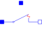

ControlledOpenerWithArcControlled ideal electrical opener with simple arc model |

|
Information
This information is part of the Modelica Standard Library maintained by the Modelica Association.
This model is an extension to the ControlledIdealOpeningSwitch.
For details of the arc effect, see partial model IdealSwitchWithArc.
Parameters (8)
| useHeatPort |
Value: false Type: Boolean Description: = true, if heatPort is enabled |
|---|---|
| T |
Value: 293.15 Type: Temperature (K) Description: Fixed device temperature if useHeatPort = false |
| Ron |
Value: 1E-5 Type: Resistance (Ω) Description: Closed switch resistance |
| Goff |
Value: 1E-5 Type: Conductance (S) Description: Opened switch conductance |
| V0 |
Value: Type: Voltage (V) Description: Initial arc voltage |
| dVdt |
Value: Type: VoltageSlope (V/s) Description: Arc voltage slope |
| Vmax |
Value: Type: Voltage (V) Description: Max. arc voltage |
| level |
Value: 0.5 Type: Voltage (V) Description: Switch level |
Connectors (4)
| p |
Type: PositivePin Description: Positive electrical pin |
|
|---|---|---|
| n |
Type: NegativePin Description: Negative electrical pin |
|
| heatPort |
Type: HeatPort_a Description: Conditional heat port |
|
| control |
Type: Pin Description: Control pin: control.v > level switch open, otherwise p--n connected |